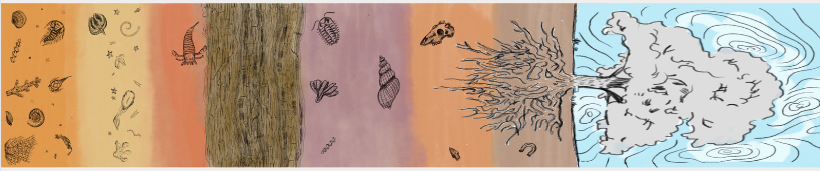

Cornell Roots
Project by Medium Design Collective Members: Sofia Echavarria, Ashley Herrera, Isabella Ma, Claire Ahn, Julia Zhang, Amanda Chen, Amatullah Ghor, Ashley Liu, Yoorim Park, Sonia Lyakovich
During my time as a member of Cornell's Medium Design Collective, we created many design projects responding to design challenges and our environment.
My favorite project we did was in Spring 2023 when I took lead as one of the project managers who had to help bring this project from ideation to completion with Ashley Herrera. Our installation seeked to push viewers to reflect on their experiences in nature and the history of the land around them. We hoped to induce a meditative experience that helps people reflect on the smallness of our time at Cornell compared to the centuries the trees have been on this land. We wanted people to take a step back from the distractions of school and everyday life to experience the beauty of age, time and change. We wanted the Cornell community to reflect on their own naive and innocent perspective on life compared to the changes that this tree has seen throughout the centuries.
We wanted to help people who live in this community reflect on the history of this landscape that has gone from being a river delta (making the different hill formations like the slope) to being the traditional homelands of the Gayogo̱hó:nǫɁ (the Cayuga Nation) before it was Cornell University. The Gayogo̱hó:nǫɁ are members of the Haudenosaunee Confederacy, an alliance of six sovereign Nations with a historic and contemporary presence on this land.
But before any person lived here, Ithaca has seen a range of life. We attempted to try to convey this through our mural, which is a stratigraphic profile of the Ithaca land. A stratigraphic profile is a representation used in geology and archeology to show the sequences of rocks that have the oldest rocks on the bottom and youngest on the top. In Ithaca, many of the fossils that can be found are from the Devonian period. The beginning of the mural starts with Early Devonian period fossils which consists mainly of corals, brachiopods, and bryozoan surrounded by siltstone, shale and ivy point siltstone. Then, we move to a formation of spafford shale. Then we move to later Devonian period fossils like brachiopods, bryozoans, trilobites, crinoids, arthroscopies, gastropods and zophycos. Once we move past the fossils, we start getting into modern era artifacts. We focused on painting different Cayuga Nation artifacts, pottery and arrowheads based on those found in upstate New York. Then we moved into items like horseshoes and bottles to show the change of power to the colonizers i.e. Cornell. Finally, we included the roots and tree that our project is centered around. Instead of doing clouds, we painted blue and white rings of the tree which help define the tree’s age.
Final Installation
Below are some images from the final installation.
Prototyping
Below are some of our prototyping and initial modeling for our installation.
Installation Structure
Below shows our designs for the structure. The panels were made from 2" by 4" by 8'. Then we hung the canvas sheets from the structure and stapled it to the structure. We had to add holes into the canvas so the wind would not move the structure and make it unsafe.
Mural Design
The mural showed the history of the land through the stratigraphic profile of the land. Below is our design we worked off of for the mural
